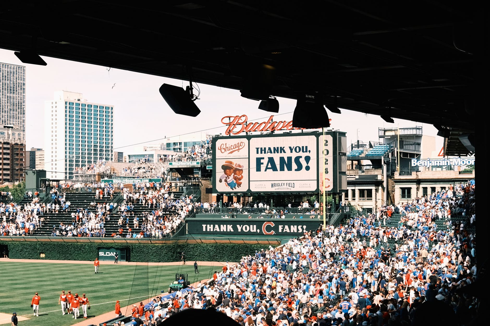

Analyzing the top contenders for 2027
The current landscape of Major League Baseball suggests a few dominant forces are emerging as perennial favorites. Teams with a blend of elite young talent and veteran leadership are currently occupying the top slots of the early power rankings. These organizations have successfully navigated the transition from rebuilding to winning, ensuring their core players are hitting their prime years just in time for the 2027 campaign.
Stability is the primary driver for these top-ranked teams. By avoiding the desperation of short-term fixes, these clubs have built sustainable models that allow them to compete for a World Series title year after year.
The impact of the offseason market
While early rankings provide a baseline, the winter months can drastically shift the trajectory of any franchise. The free agent market remains the most volatile variable in these projections. A single blockbuster signing of a superstar shortstop or a frontline ace can propel a mid-tier team into the top five almost overnight.
The difference between a playoff contender and a lottery team often comes down to two or three key acquisitions during the winter meetings.
Furthermore, trade deadline leftovers and early winter swaps often refine the rosters of teams looking to optimize their payroll. Teams that are aggressive yet disciplined in their spending will likely see their rankings climb as the 2027 season approaches.
Rising stars and sleeper teams
Not every team in the top ten is a traditional powerhouse. Several sleeper teams are climbing the rankings due to the rapid development of their minor league prospects. These teams are often overlooked because their current win-loss record does not reflect the talent waiting in the wings.
When these young stars synchronize their breakthroughs, it creates a surge of momentum that can catch the rest of the league off guard. These are the teams that analysts are watching closely as the 2027 season takes shape.
Challenges for the bottom tier
On the opposite end of the spectrum, several teams find themselves struggling in the lower half of the power rankings. For these franchises, the path to recovery is rarely linear. Many are trapped in a cycle of losing seasons and failed experiments, making it difficult to attract top-tier free agent talent.
The primary hurdle for these teams is often a lack of pitching depth. Without a reliable rotation, even a potent offense cannot sustain a winning streak. To climb the rankings, these teams must prioritize the development of their pitching academies and consider bold trades for established arms.
However, being low in the rankings offers one distinct advantage: high draft picks. The ability to select generational talents in the early rounds is the most reliable way for a struggling team to reset its culture and build a new foundation for success.
Looking ahead to the 2027 season
As we move closer to Spring Training, these rankings will continue to evolve. The synergy between a team's payroll and its player development will be the deciding factor in who actually delivers on these early projections. Fans should expect a high level of volatility as injuries and unexpected breakouts occur.
To understand how individual brilliance contributes to team success, it is helpful to look at the players who have already reached the pinnacle of the sport. For more insight into the league's elite performers, check out our analysis of the MLB 2026 Award Finalists: MVP and Cy Young Race at https://dhyey.bond/blog/mlb-2026-award-finalists-mvp-and-cy-young-race/ to see who set the standard for the coming years.
Ultimately, the 2027 season promises to be a clash of styles, pitting legacy powerhouses against aggressive newcomers in a fight for baseball supremacy.
See Also
If you enjoyed this Baseball News article, check out MLB 2026 Award Finalists: MVP and Cy Young Race for more useful reading.